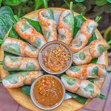
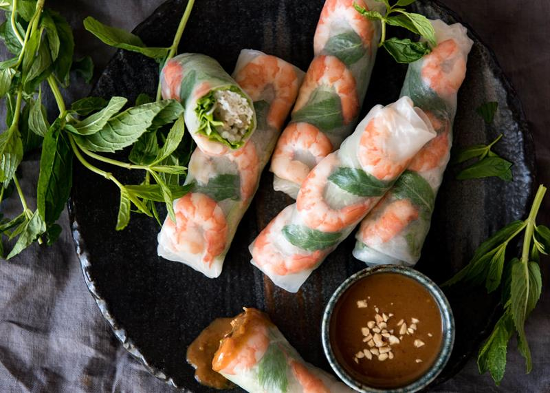

VIETNAMFOOD
VIETNAMFOOD
VIETNAMFOOD
VIETNAMFOOD
3/2/2024 15:27 GMT+7
Gỏi cuốn là món khai vị tươi mát đánh thức giác quan của thực khách trước khi bắt đầu các món chính. Món gỏi cuốn đã trở nên quá quen thuộc với người dân Việt Nam. Đây cũng là món ăn được đánh giá là khá dễ ăn, đặc biệt khi chấm cùng các loại nước mắm ăn kèm sẽ mang đến một hương vị đặc trưng.
Gỏi cuốn Việt Nam
Thông thường, bánh tráng được làm bằng gạo trắng xay mịn trộn với lượng nước vừa đủ tạo thành hỗn hợp sền sệt, dàn mỏng, hấp chín rồi sấy khô. Để có đủ thời gian sắp xếp các nguyên liệu làm nhân và gấp tròn thành miếng cuộn vừa khít đẹp mắt, hãy dùng nước mát làm ẩm lá bánh tráng. Giấy gói sẽ thấm nước chậm hơn, mềm hơn và sẽ có kết cấu phù hợp để làm.
Gỏi cuốn thường được chế biến với một lớp bánh tráng mỏng kết hợp cùng nhân bên trong là các loại thịt theo sở thích như thịt heo, thịt bò hoặc các loại hải sản như tôm, cua… Điều đặc biệt, gỏi cuốn không cần chiên mà sử dụng nhân chín cùng với các loại rau gia vị gói trong bánh tráng (đã nhúng qua nước cho mềm) và dùng kèm với nước mắm tỏi ớt, hoặc nước tương bơ đậu, tương đen, mắm nêm. Gỏi cuốn thường được ăn vào mùa hè mang đến cảm giác tươi mát và thanh đạm. Tùy từng địa phương khác nhau, các loại gia vị dùng kèm gỏi cuốn sẽ theo khẩu vị của người dân ở vùng miền khác nhau.
Gỏi cuốn Việt Nam
Theo tác giả Peggy Aoki, gỏi cuốn cũng là món ăn rất ngon miệng, thường kết hợp thêm với bún hoặc một số loại rau tươi. Ban đầu, đầu bếp phải lựa chọn loại bánh tráng ngon nhất. Nhiều công thức nấu ăn bao gồm hướng dẫn nhúng bánh tráng vào nước để bù nước giúp lá bánh mềm và dễ cuốn hơn.
Nước chấm cũng khác nhau tùy theo từng vùng, miền Bắc ưa chuộng hỗn hợp nước mắm, chanh, tỏi, ớt và nước; miền Trung chọn nước sốt đậu phộng và nước chấm thiên về nước sốt cay nồng với tương đậu lên men và cá cơm lên men. Món cuốn đã mang đậm nét văn hóa Việt Nam đến ngày nay và là một phần quý giá của ẩm thực toàn cầu.

Khi khách hàng cần chúng tôi sẽ có mặt

Hỗ trợ thanh toán online qua Ví điện tử

Thông tin chính xác, kịp thời, đầy đủ
GIỚI THIỆU
QUẢNG CÁO
CHÍNH SÁCH BẢO MẬT
LIÊN HỆ
©2024